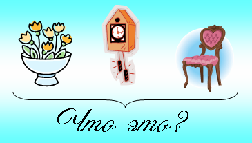
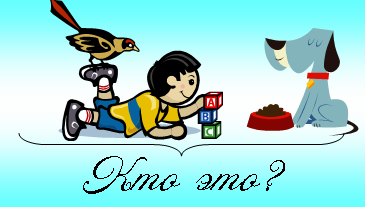
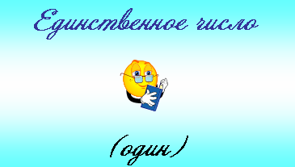
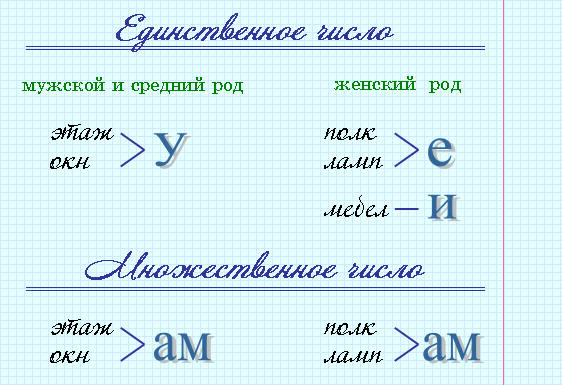
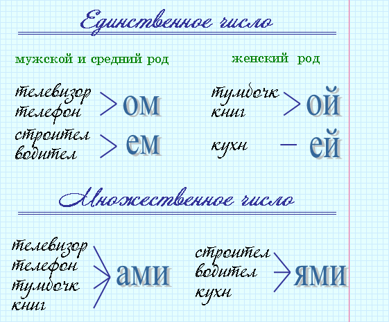
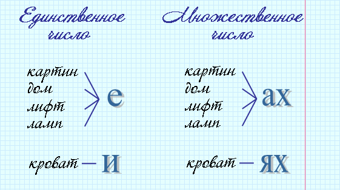
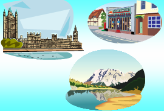

Слова, обозначающие людей или животных, отвечают на вопрос кто?
Имя существительное обозначает предмет.
 |
 |
|
| Это цветы. Это часы. Это стул. |
Это птица. Это мальчик. Это собака. |
|
Запомни! Слова, которые отвечают на вопрос кто? или что?
– существительные.
Слова, обозначающие людей или животных, отвечают на вопрос кто? Имя существительное обозначает предмет. |
 |
|
мужской род (он чей? он мой) |
женский род (она чья? она моя) |
средний род (оно чьё? оно моё) |
 |
стул строитель телефон |
комната девочка стена |
зеркало радио электричество |
|
Вопросы "Кому?", "Чему?" могут употребляться с предлогами по, к. |

|
Вопросы "Кем?", "Чем?" могут употребляться с предлогами с, под, над. |

|
Вопросы "О ком?", "О чём?", "Где?" могут употребляться с предлогами на, о, об, в. |

 |
Запомни! Предлоги по, к, с, под, над, на, в, о, об пишутся со словами отдельно. |
|
Запомни! Имена, отчества, фамилии людей, клички животных всегда пишутся с большой буквы. |
|
кошка Мурка собака Шарик Петрова Анна Фёдоровна |
|
Запомни! Названия городов, деревень, улиц, морей, рек, озёр, океанов всегда пишутся с большой буквы. |
|
город Москва деревня Ольшанка улица Жукова Каспийское море река Иртыш Тихий океан озеро Байкал |
 |